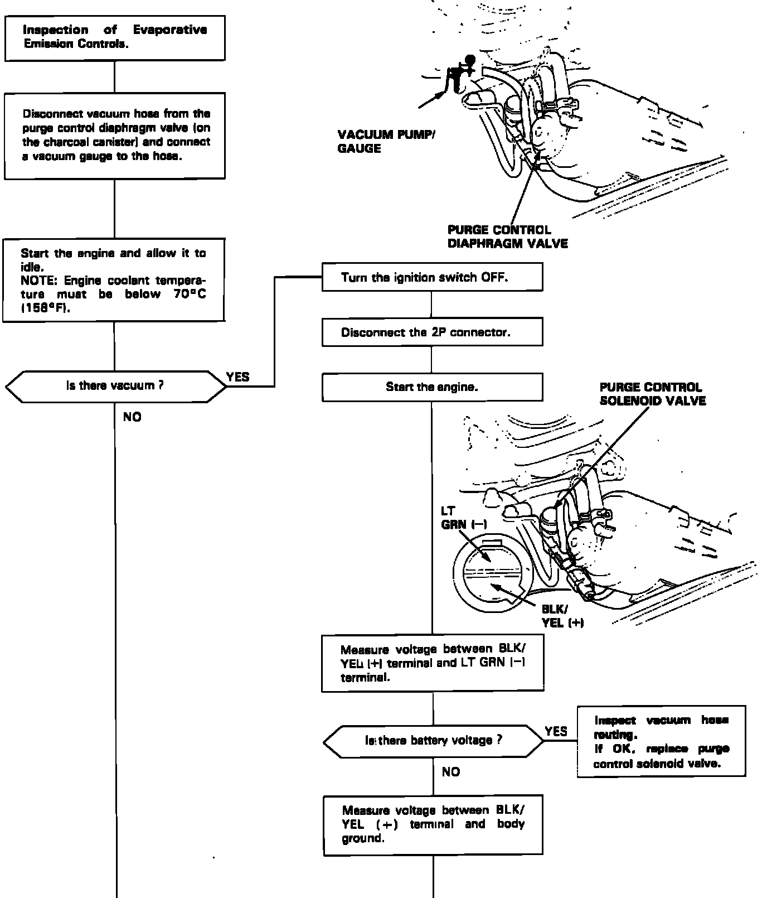
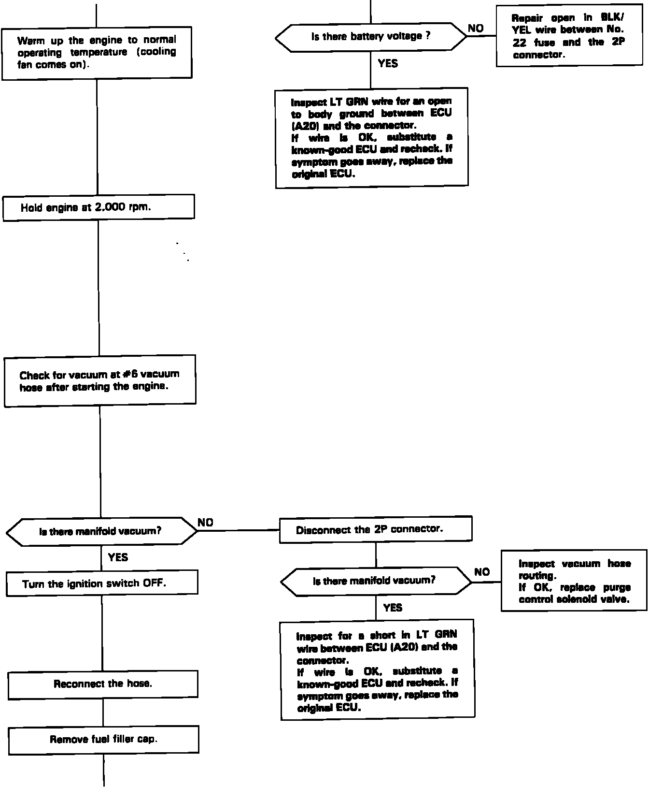
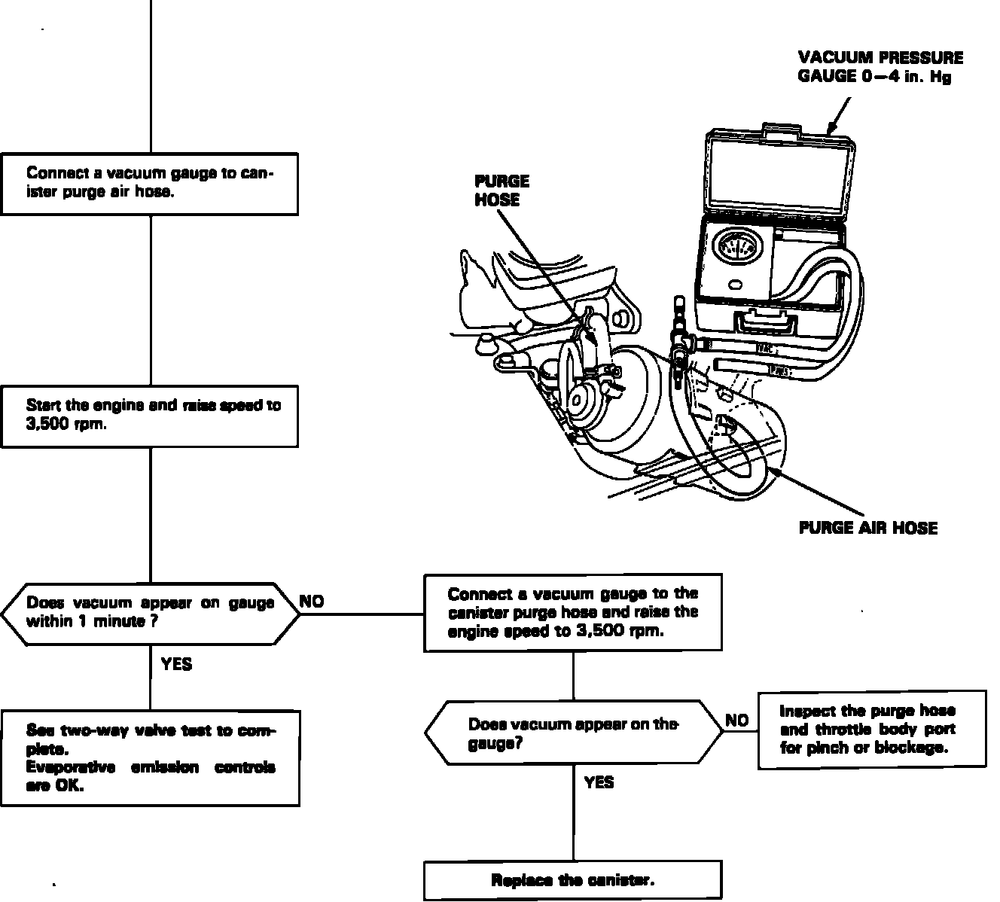
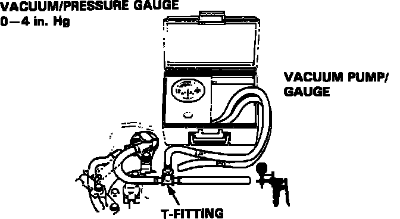
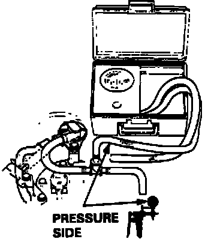

Evaporative Check Valve: Testing and Inspection
Page One, Continued Next Image:

1 OF 3
Page Two, Continued Next Image:

2 OF 3
Evaporative Emission Controls System Test:

3 OF 3
EVAPORATIVE EMISSION CONTROLS (EVAP) SYSTEM TEST
TWO-WAY VALVE TEST:
1. Remove the fuel filler cap.
2. Remove the vapor line from the fuel tank and connect it to a T-fitting from a vacuum gauge and pump as shown.
Two-Way Valve Vacuum Test:

3. Apply vacuum slowly and continuously while watching the vacuum gauge.
a. Vacuum should stabilize momentarily at 5 to 15 mmHg (0.2 to 0.6 in.Hg).
b. If vacuum stabilizes (valve opens) below 5 mmHg (0.2 in.Hg) or above 15 mmHg (0.6 in.Hg), install a new valve and retest.
4. Move the vacuum pump hose from the vacuum to the pressure fitting, and move the vacuum gauge hose from the vacuum to the pressure side as shown.
Two-Way Valve Pressure Test:

5. Slowly pressurize the vapor line while watching the gauge.
a. Pressure should stabilize at 10 to 35 mmHg (0.4 to 1.4 in.Hg).
b. If the pressure momentarily stabilizes (valve opens) at 10 to 35 mmHg (0.4 to 1.4 in.Hg), the valve is OK.
c. If pressure stabilizes below 10 mmHg (0.4 in.Hg) or above 35 mmHg (1.4 in.Hg), install a new valve and retest.